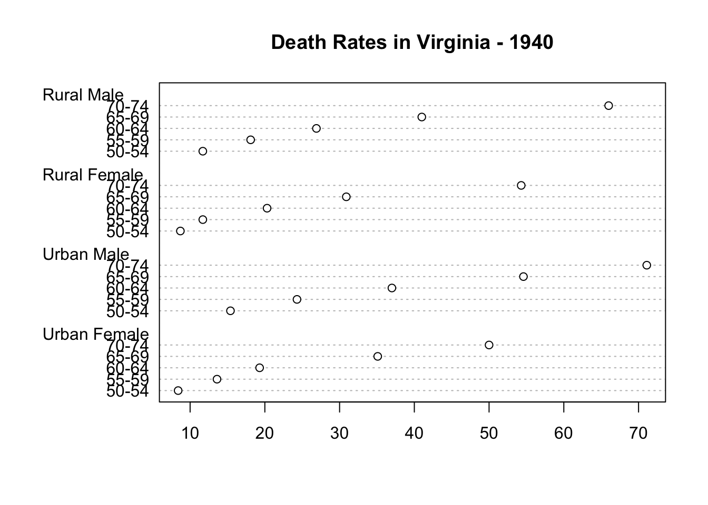

R scripts can be rendered!
Jenny Bryan
2016-07-13
Here’s some prose in a very special comment. Let’s summarize the built-in dataset VADeaths.
## here is a regular code comment, that will remain as such
summary(VADeaths)## Rural Male Rural Female Urban Male Urban Female
## Min. :11.70 Min. : 8.70 Min. :15.40 Min. : 8.40
## 1st Qu.:18.10 1st Qu.:11.70 1st Qu.:24.30 1st Qu.:13.60
## Median :26.90 Median :20.30 Median :37.00 Median :19.30
## Mean :32.74 Mean :25.18 Mean :40.48 Mean :25.28
## 3rd Qu.:41.00 3rd Qu.:30.90 3rd Qu.:54.60 3rd Qu.:35.10
## Max. :66.00 Max. :54.30 Max. :71.10 Max. :50.00Here’s some more prose. I can use usual markdown syntax to make things bold or italics. Let’s use an example from the dotchart() help to make a Cleveland dot plot from the VADeaths data.
dotchart(VADeaths, main = "Death Rates in Virginia - 1940")